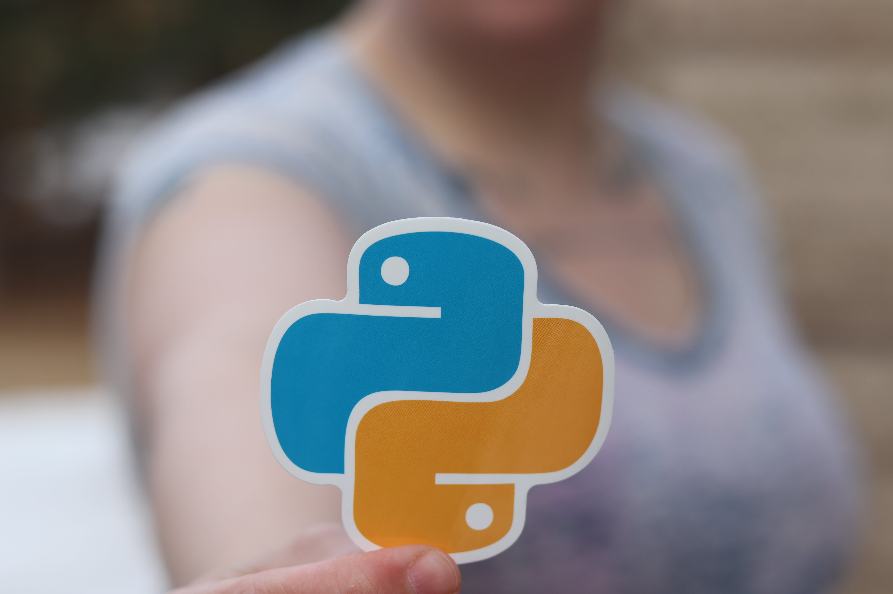
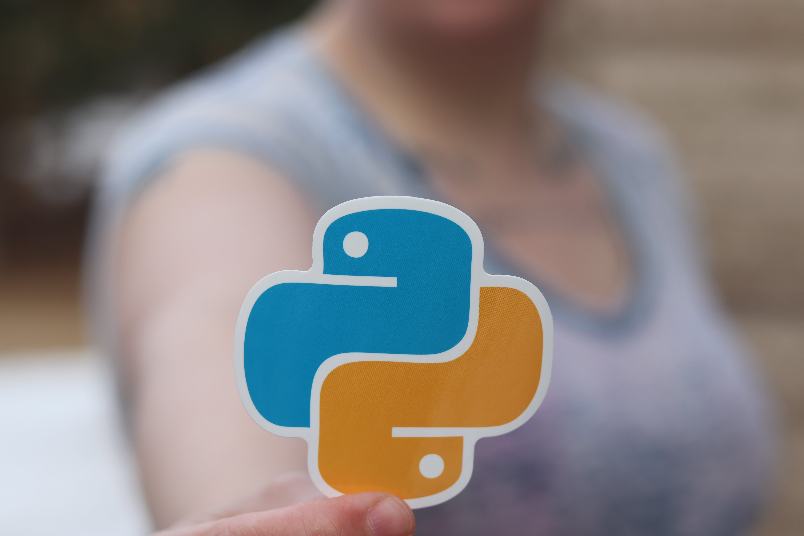

I'm Thomas Ernesto Ginder and Welcome to my coding journey!
SIEMENS Step 5 & 7
I graduated with 87/100 in the Maintenance Technician studying path from I.P.S.I.A. A. Meucci Professional High-School in Cagliari, Sardinia. I also took an electrician regional qualification with 94/100. I loved study electrical subjects, but most important, I was fascinated by the programming language SIEMENS Step 5 and Step 7. I loved the logic behind and the satisfaction of creating and fixing codes, especially the tough ones.

 


Python
After my school graduation and some job experience in an optical fiber company and plastic bags factory, I decided to dedicate better my time to improving my coding, so I looked for some web coding course than I found an edX begginers course offered by MichiganX (an online learning initiative of the University of Michigan) for Python devided in 2 main parts; the first for getting started and the second for Python Data Structures, pretty cheap for starting my coding career.
Html & Css
Under the advice of one of my close friends, I decided to start a Master's in Back End Development at Start2Impact University because I was missing programming and tired of doing nothing or unsatisfactory jobs. So I started with a course in HTML & CSS and this is my first project (I also made a YouTube clone following a video tutorial by SuperSimpleDev). Now I'm again getting the beautiful feeling of coding, the sensational aspect of logic, and the full-emotional feeling of doing a complex code that works how I want to.